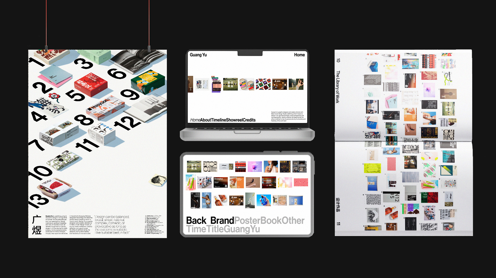
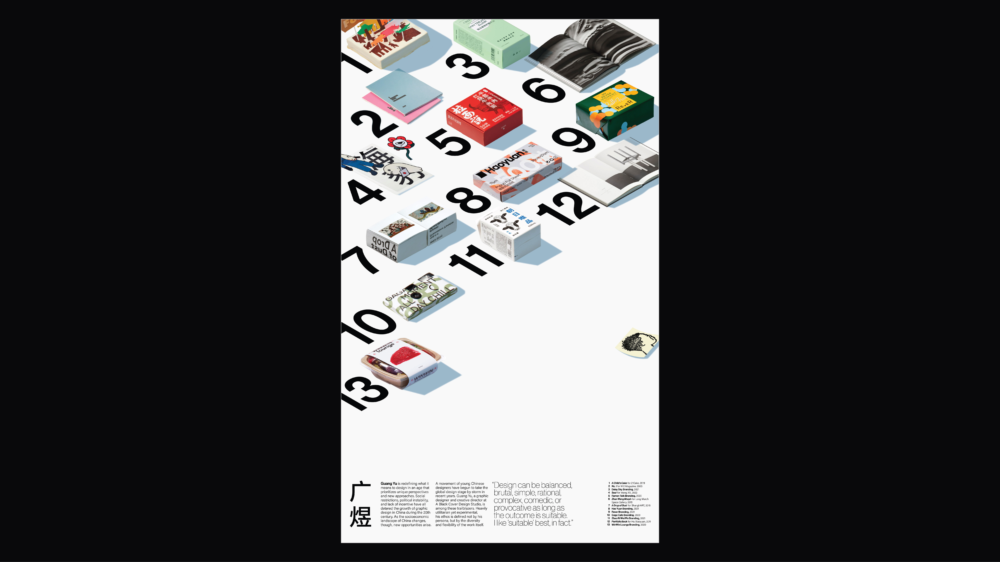
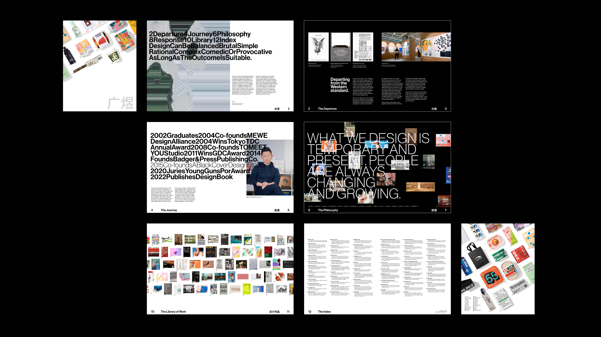
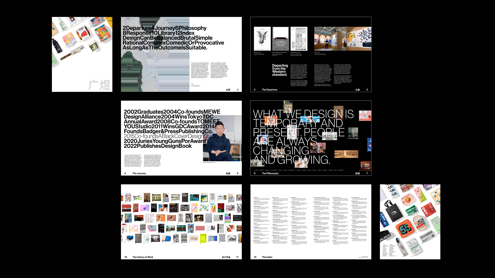
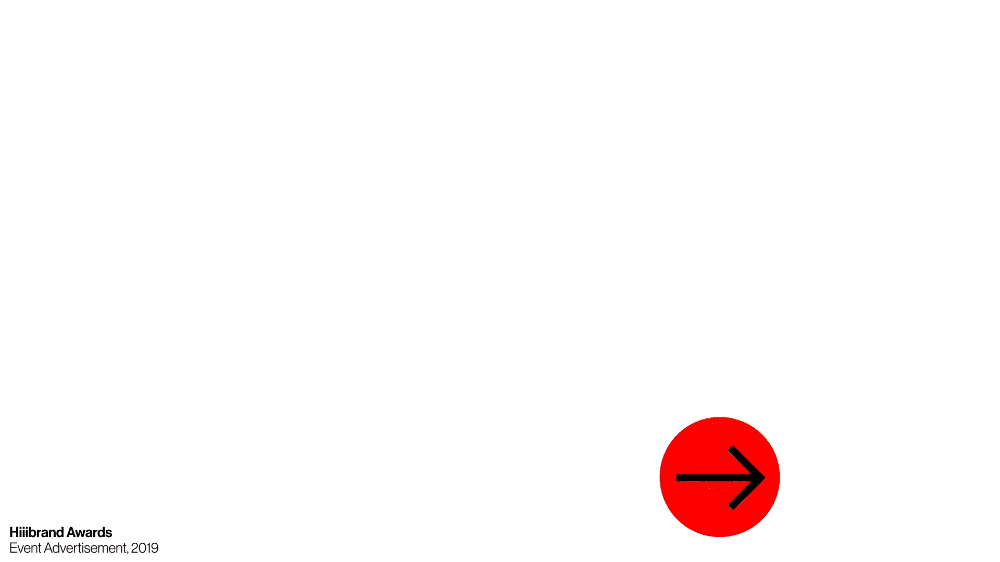
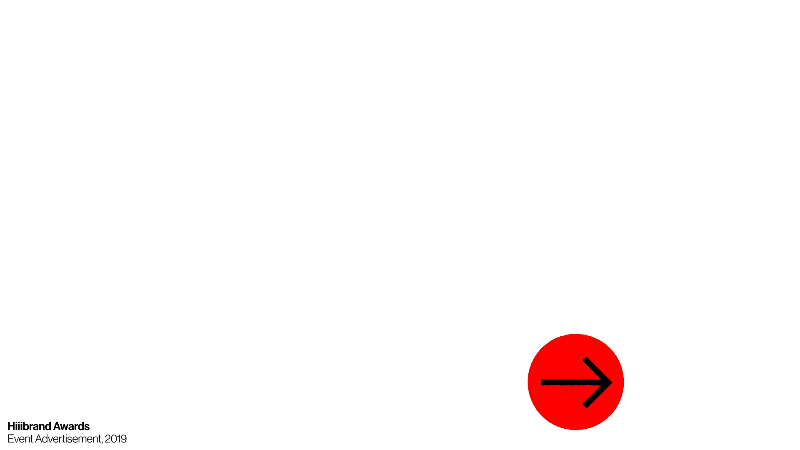

-
● Course Project
Multimedia project for Guang Yu, a prolific graphic designer and brand director, and my design hero.
-
Skills
Graphic Design
Publication Design
Motion Design
UX/UI Design
-
Duration
14 weeks
Spring 2023 -
Tools
Adobe InDesign
Adobe Illustrator
Adobe Photoshop
Adobe After Effects
Figma
-


-
Guang Yu is a Beijing-based graphic designer, and co-creative director of ABCD Studio.
-

-
● Overview
"Branding" a brand designer.
-
The biggest hurdle of this project was negotiating the diverse and library of work Guang Yu has done throughout his career with my own personal style. Something I quickly realized was that a brand designer doesn't necessarily have a 'personal style', or anything that is distinctly 'them' (at least visually) when working on a project for a client. I instead had to craft a style of *presenting* work, that gave enough reverence for the work itself, while also representing the guile, adaptability, and creativity of a multi-faceted and practical designer.
I ended up with a system that reflected the practical nature Guang Yu uses to present his own work, a system that lets the work speak for itself. Tight and neat type treatment, clean and energetic motion, and a constant dedication to representation over reinvention brough this system of artifacts together, and I am beyond happy with how this turned out. -
● Artifact 1
Poster
-
By far the hardest part of this project, where I was struggling to find a cohesive style throughout the breadth of Guang Yu's work. This poster introduces Guang Yu, detailing his work as a symbol for his progression as a designer and highlighting the diversity of projects.
- 
-
● Artifact 2
Booklet
-
A 12-page deep-dive into the life and work of Guang Yu, from his early start as a graphic designer bouncing between small short-lived studios to a creative director at the leading creative agency in China.
-
 

-
● Artifact 3
Video
-
A "sizzle reel" of work, bringing static brands to life. Each project is showcased as a little universe of its own, introduced and concluded with a breath of fresh air.
-
-
 

-


-
● Artifact 4
Kiosk Experience
-
An interactive library of Guang Yu's work, simulating the sense of exploration between each project.
-
-
● Concluding Thoughts
A brand isn't just a quirky visual style
-
Approaching this project, I thought that in order to have a consistent series of projects, I would have to surmise some clever and experimental visual style in order to be successful. However, that just wasn't what the project demanded. I instead had to practice restraint and approach much more conservatively with the visual elements to accurately capture the practical nature of Guang Yu's body of work.
Overall, this project has been incredibly rewarding. I truly enjoyed each and every part, and learned so much about my personal work and visual style throughout. Please contact me if you would like to learn more about this project, it means a lot to me and I'm happy to go in depth on my process!